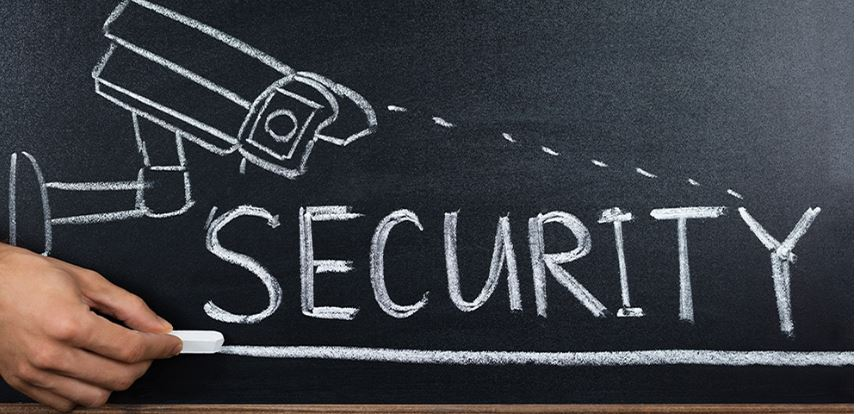
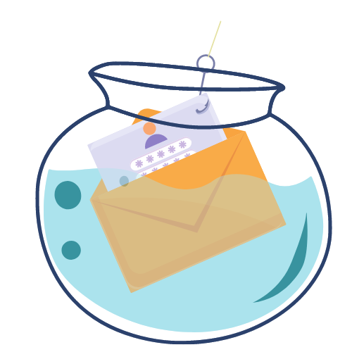
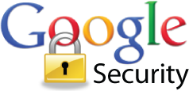
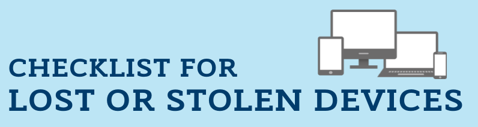
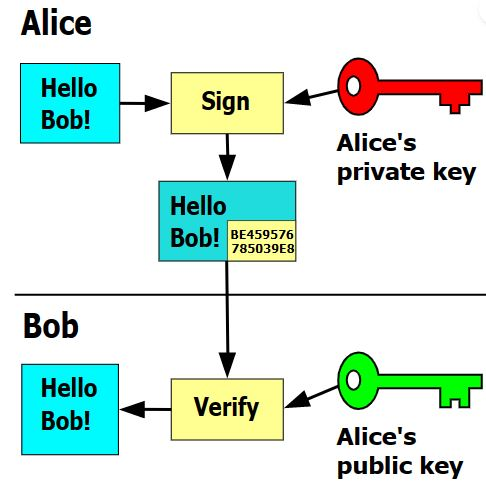
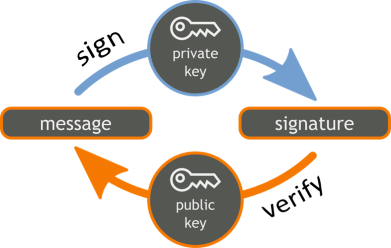

Препоръки за сигурност за студенти в уеб. Генериране и използване на цифров подпис
Защо сигурността е важна?

Фиг.[1]
В днешното забързано и все по-дигитално ежедневие вече почти всеки човек съхранява най-важните неща от своя
живот
онлайн. Не става въпрос единствено и само за достъп до профила ви в някоя социална мрежа, а за работна
документация,
лични данни или банкова информация.
Ако не внимаваме къде кликаме, лесно можем да направим така, че неподходящи хора да получат достъп до
най-важното за
нас. Затова е необходимо да се поддържа минимално ниво на киберхигиена - не само по отношение на линковете,
които цъкаме, или
сайтовете, които посещаваме. Нужни са и няколко други елементарни стъпки. За щастие те не изискват нито време,
нито
специализирани познания.
Оналйн сигурност? Възможно ли е?
Интернет е необятно виртуално пространство, пълно с възможности за общуване, работа, информация и покупки. Предвид
зачестилите случаи на онлайн измами и откраднати лични данни е изключително важно да се познават рисковете, с които е възможно
да се сблъскаме, ползвайки световната мрежа. Колкото повече знаем за опасностите онлайн, толкова по-спокойно можем да се
защитим от тях. Най-често срещани са случаите с разбиване на пароли и злоупотребата с лични профили и данни. Изборът на уникална и
надеждна парола е едно от най-важните условия за защита, така че не трябва да се пренебрегва силата ѝ. Важно е да се използват специални
символи, а не лесни за отгатване думи, дати и номера. Препоръчително е паролите да се сменят регулярно и да се използват различни пароли за различните
сайтове. Използването на двуфакторна автентикация, т.е. двустепенна система за удостоверяване на самоличността за
най-важните регистрации също гарантира по-сериозна защита.
Хубаво е да се избягват публични мрежи и чужди устройства, както и незащитени с парола мрежи. Ако все пак се наложи да използвате такива, то би било хубаво да
имате доверие на човека, и то само в режим инкогнито. Не допускайте непознати хора до устройствата си, особено без
надзор. Сайтовете, за които браузърът предупреждава, че са опасни, също крият сериозен риск. Изключително важно
е да поддържате добра дигитална култура, т.е е добре регулярно да инсталирате последните актуализации и да използвате
антивирусна програма. Също така не трябва да включвате непознат хардуер към устройствата си и е добре винаги да съхранявате най-важната си
информация поне на две места.
Опазването конкретно на личните данни невинаги зависи единствено от вас, обаче. Нарушаването на поверителността им
определено може да ви изложи на големи рискове, както и да позволи на недобросъвестни лица да злоупотребят с тях и да се
облагодетелстват за ваша сметка.
Препоръки за сигурност за студенти в уеб
В днешния забързан свят, интернетът е едно универсално решение за бърза комуникация между хората.
С едно щракване на мишката всеки може да получи достъп до световна библиотека от информация, развлечения и социални медии.
Интернет улеснява хората да изразяват себе си и да общуват с хора с подобно мислене. Предлага очарователен начин за свързване със света около
нас, но крие и нови опасности.
Докато повечето компютри все още разчитат на технологията на твърдия диск (HDD) за съхранение на данни, много училища
вече използват компютри и сървъри със твърдотелни устройства (SSD), които предлагат няколко предимства по отношение на
скорост и издръжливост.
Учениците и тинейджърите трябва да знаят за реалността на тези опасности, за да не станат мишена. Всъщност голям процент
от интернет хищниците са насочени към деца и ученици. Кражба на самоличност, кибертормоз, киберпреследване и хакване са
всичко, за което учениците и тинейджърите трябва да се тревожат. В резултат на това много родители, учители и
правителствени агенции са положили усилия да образоват учениците за опасностите в Интернет. Въпреки, че това може да
помогне, учениците трябва да се научат как да разпознават предупредителните знаци за тези опасности, за да се предпазят от
това да станат жертви. Също така трябва да се научат стратегии за справяне, за да се преодолеят ефектите от
виктимизацията,ако това се случи.
Образователните институции съхраняват значително количество чувствителни данни, вариращи от изследвания до тестови
документи на лична информация за студентите. Въпреки, че киберсигурността във финансовата индустрия привлича значително
внимание, последните насоки също така подчертават уязвимостта в образователния сектор. Тъй като училищата включват
повече технологии в класните стаи и административните офиси, информационната сигурност става все по-важна.
Видове атаки
Фалшиви предложения за работа, фишинг и други измами
Измамите с предложения за работа обикновено работят по следния начин: някой се свързва с вас, обикновено по имейл и ви кани да кандидатствате или да започнете работа.Тези предложения за работа често са непоискани,
т.е никога не сте кандидатствали или не сте били интервюирани за
работа. Друг път ви канят да кандидатствате за работа с необичайно желани условия (кратко работно време, лесна
работа, много пари, възможност за работа от вкъщи). След като кандидатствате, може да се проведе кратък и лесен процес
на интервю, в което да се запознаете с действителните подробности за работата. Тези измами могат да започват и с това, че
някой "уж" ви предлага да ви помогне с автобиографията ви или с намирането на работа.
Има много различни видове измами. Ето два примера:
Често срещана измама на уебсайта на Федералната търговска комисия е насочена към студенти, където ви се изпраща
фалшив чек и се иска да обработвате, прехвърляте или харчите парите си за привидно законни цели.
Друг път ви молят да изпращате пари под формата на карти за подарък или криптовалута като биткойн:
два метода за изпращане на пари, които не могат да бъдат проследени и невъзстановими.
Но парите са илюзия. Въпреки че можете да получите чек, този чек обикновено не е истински. В зависимост
от това как сте
се насочили да използвате парите, може дори да бъдете обвинени в престъпление като пране на пари или измама с кредитни
карти.
Много студенти се притесняват да си намерят работа и тези измами използват тактики, предназначени да предизвикат тези
тревоги.
Ако някой се свърже с вас с неочаквано предложение за работа, ето някои неща, които трябва да разгледате, за да
определите дали това е измама:
Измамите са общи
“Dear student,” one scam email begins, “We got your contact through your school directory…”
Имейлите, в които не се споменават подробности като вашето име или училището, най-вероятно са общи, така
че да могат да бъдат изпращани до много хора наведнъж. Много необичайно е една компания да предлага работа на голяма
група хора, особено когато тези хора не са кандидатствали или не са били интервюирани.
Измамите с предложения за работа може също да включват общи описания на длъжността като „организиране на поръчки на
артикули [sic]“ или „[написване] на подробни отчети“, а понякога изобщо не включват описание на длъжността.
“You are selected from your school directory to partake in the ongoing Student Empowerment Program PART TIME JOB OFFER…” гласи друг измамен имейл.
Всеки студент, който е кандидатствал за работа, знае, че пазарът може да бъде конкурентен. И точно както компаниите
обикновено не предлагат работа на голям брой хора, те обикновено не избират тези хора на случаен принцип.
Ако получите оферта за работа, за която не сте кандидатствали, и те твърдят, че са ви намерили чрез „вашия училищен
указател“ или „вашето училищно търсене на работа“, най-вероятно сте мишена на измама.
Измамите са твърде добри, за да са истина
Един измамнически имейл от „Тери Уайт“ (компания) насърчава да „Работите 7 часа седмично и да
получавате 350 долара“. Не е зле за позиция на начално ниво, за която сте избрани на случаен принцип.
Измамите с предложения за работа примамват с невероятно добро заплащане за много лесна работа - нещо, което просто не е
толкова често срещано на реалния пазар на труда.
Измамите имат правописни и граматически грешки
Имейлите от реномирани компании ще имат евентуално малко или никакви правописни или граматически грешки. Изобилието от
правописни или граматически грешки определено е червен флаг.

Фиг.[3]
Ето и наколко цитата от реални измами с предложения за работа:
„Изследователската позиция е отворена за студенти от всеки отдел на институцията, тъй като дава страхотни възможности на
студентите от Санта Круз да учат и да печелят пари...“
„Придружено от атрактивно заплащане и разумно работно време на седмица.“
„Получете подробна фактура, показваща, че всички поръчани продукти са правилни и на място.“
Поверителност в интернет(Фейсбук, Туитър и други)
Всяка информация, която въвеждате онлайн, е публична, освен ако не използвате известен, доверен и защитен
сайт.
Защитете информацията си при използване на интернет и имейл.
Как можете да изложите на риск информацията, когато използвате интернет?
Поверителността в Интернет е много важна, особено след като все повече и повече хора го използват за
професионален и личен бизнес, общуване и забавление.
Само отварянето на злонамерена уеб страница или прикачен файл може да зарази компютър. Уверете се, че знаете къде
отивате, преди да щракнете върху връзка или да отворите нещо.
Информацията, изпратена по интернет или по имейл, не е непременно защитена.
Информацията, която публикувате онлайн, може да е по-публична, отколкото си мислите.
Какво трябва да направите?
Не давайте лична информация на никого, когото не познавате или който няма законна нужда от нея.
Не предоставяйте лична, чувствителна или поверителна информация онлайн, освен ако не използвате надеждна, защитена уеб
страница.
Отидете до уеб сайтове, като въведете индиректно уеб адреса.
Не кликвайте и не изрязвайте и поставяйте връзки в нежелани имейли.
Не забравяйте, че връзките и уеб сайтовете, които изглеждат законни, наистина могат да бъдат фалшиви сайтове,
предназначени да откраднат информация или да заразят вашия компютър.
Използвайте защитени криптирани мрежи
Бъдете особено внимателни какво правите по безжична връзка. Информацията и паролите, изпратени чрез стандартна,
некриптирана безжична връзка, са особено лесни за прихващане от хакери (повечето безжични мрежи с публичен достъп са некриптирани).
Aктивирайте автоматичните актуализации
Актуализациите коригират проблеми в софтуера и приложенията на вашата операционна система (основната програма, която
управлява вашия компютър/устройство). Остарелите и необработени устройства са особено уязвими към вируси и хакери. За да
се защитите:
Включете автоматичните актуализации за вашия компютър, антивирусната програма и всички приложения, които имате.
Инсталирайте актуализации, когато вашите програми ви кажат, че са налични.
Изключвайте или рестартирайте компютъра си веднъж седмично. Това помага да се уверите, че актуализациите на софтуера и
защитата са правилно инсталирани, за да защитите компютъра си и да поддържате безпроблемната му работа.
Не забравяйте да синхронизирате често мобилните си устройства, за да получавате налични актуализации.
Споделянето на файлове може да изложи компютъра ви на редица рискове за сигурността.
Въпреки че споделянето на файлове само по себе си не е незаконно, ако споделяте или изтегляте защитен с авторски права
материал без разрешение, дори несъзнателно, вие нарушавате закона и можете да бъдете
обект на университетски, наказателни или граждански санкции.
Неправилно конфигуриран софтуер за споделяне на файлове може да позволи на другите достъп до целия ви компютър, а не
само до файловете, които възнамерявате да споделите.
Вируси и зловреден софтуер могат да се предават чрез софтуер за споделяне на файлове.
Файловете, предлагани от други, може не винаги да са това, което казват, че са.
Стартирайте актуален софтуер против зловреден софтуер. Това е необходимо за Mac и персонални компютри.
Има и безплатен софтуер за ученици, предоставен от учебните заведения
Уверете се, че вашият софтуер за споделяне на файлове е конфигуриран да споделя само файловете, които възнамерявате
да споделите.
Освен това изключете споделянето на файлове, когато не го използвате активно, за да избегнете несъзнателно споделяне на
лични или защитени с авторски права файлове.
Препоръчително е да използвате легални услуги за споделяне на файлове за получаване на музика, филми, телевизия, игри, книги
и т.н. в Интернет. Голям списък с цифрова музика, видеоклипове и други услуги е достъпен от "Educause" в легалните
източници на онлайн съдържание.
Защитено и сигурно използване на Google
Google е страхотен за имейл и всичките му приложения и инструменти.
Не забравяйте да проверите сигурността на Google Apps, за да защитите акаунта и личната си информация.

Фиг. [6]
Мобилни устройства
Защитете всичките си устройства. Представете си, че вашият телефон или друго мобилно устройство е изгубено или
откраднато. Каква информация са получили? Кои от вашите акаунти и кредитни карти могат да използват? Съхранявайте само
информация, която сте готови да загубите.

Фиг. [7]
Свързвайте се сигурно
Случайни безжични горещи точки могат да откраднат вашите пароли и информация.
За да защитите поверителността си в кампуса, използвайте защитена безжична връзка, която е достъпна в училището/университета и
на други места.
Извън училището използвайте виртуална частна мрежа (VPN), когато се свързвате към публична безжична връзка,
като в кафене
Уверете се, че другите нямат възможността да използват вашите акаунти злонамерено!
Не споделяйте паролата си с никого.
Важно е да имате уникални пароли за всеки акаунт, но запомнянето на всички тях може да бъде трудно. Мениджърите на
пароли са безопасен начин за цифрово съхраняване на всички ваши пароли, докато не ви потрябват.
Можете също така да използвате пароли и комбинация от главни букви, цифри и специални символи, за да защитите паролата
си срещу кракване и други опити за хакерство.
Вариант е също така да използвате и генератор за пароли.
Изберете трудни за отгатване въпроси за сигурност, когато създавате нови акаунти. Има много информация за вас в
интернет. Когато избирате въпроси за проверка на сигурността, не избирайте опции, които имат лесни за търсене отговори.
Сменяйте паролите си редовно. Дори ако хакер успее да се докопа до вашите идентификационни данни, той няма да може да ги
използва, ако сте актуализирали паролата си.
Цифров подпис
Цифровият подпис е математическа техника, която се използва за потвърждаване на автентичността и целостта на съобщение, софтуер
или цифров документ. Това е цифровият еквивалент на ръкописен подпис или подпечатан печат, но предлага много по-присъща
сигурност. Цифровият подпис има за цел да реши проблема с подправянето и представянето в цифрови комуникации.
Цифровите подписи могат да предоставят доказателство за произход, идентичност и статус на електронни документи,
транзакции или цифрови съобщения. Подписващите могат също да ги използват, за да потвърдят информираното съгласие.
В много страни, включително Съединените щати, цифровите подписи се считат за правно обвързващи по същия начин като
традиционните ръкописни подписи на документи.
Цифровите подписи се основават на криптография с публичен ключ, известна още като асиметрична криптография. С помощта на
алгоритъм за публичен ключ, се генерират два ключа, създавайки математически свързана двойка ключове, един частен и един
публичен.
Цифровите подписи работят чрез два взаимно удостоверяващи се криптографски ключа на публичния ключ. Лицето, което
създава цифровия подпис, използва частен ключ за криптиране на данни, свързани с подписа, докато единственият начин за
дешифриране на тези данни е с публичния ключ на подписващия.
Ако получателят не може да отвори документа с публичния ключ на подписващия, това е знак, че има проблем с документа или
подписа.
Технологията за цифров подпис изисква всички страни да се доверят, че лицето, което създава подписа, е запазило частния
ключ в тайна. Ако някой друг има достъп до частния ключ за подписване, тази страна може да създаде измамни цифрови
подписи на името на притежателя на частния ключ.
Генериране на цифров подпис
За създаване на цифров подпис се използва софтуер за подписване, като програма за електронна поща, за предоставяне на
еднопосочен хеш на електронните данни, които трябва да бъдат подписани.
Хешът е низ от букви и цифри с фиксирана дължина, генериран от алгоритъм. След това частният ключ на създателя на
цифровия подпис се използва за криптиране на хеша. Шифрованият хеш, заедно с друга информация, като например алгоритъма
за хеширане е цифровият подпис.
Причината за шифроване на хеша вместо цялото съобщение или документ е хеш функцията, която може да преобразува
произволен вход в стойност с фиксирана дължина, която обикновено е много по-кратка. Това спестява време, тъй като
хеширането е много по-бързо от подписването.
Стойността на хеш е уникална за хешираните данни. Всяка промяна в данните, дори промяна в един знак, може да доведе до
различна стойност. Този атрибут позволява на другите да използват публичния ключ на подписващия, за да дешифрират хеша и
да потвърдят целостта на данните.
Ако дешифрираният хеш съответства на втори изчислен хеш на същите данни, това доказва, че данните не са се променили,
откакто са подписани. Ако двата хеша не съвпадат, данните или са били подправени по някакъв начин и са компрометирани,
или подписът е създаден с частен ключ, който не съответства на публичния ключ, представен от подписващия, тоест има
проблем с удостоверяването .
Цифровият подпис може да се използва с всякакъв вид съобщение, независимо дали е криптирано или не, просто за да може
получателят да е сигурен в самоличността на подателя и съобщението да пристигне непокътнато. Цифровите подписи
затрудняват подписващия да отрече, че е подписал нещо, тъй като цифровият подпис е уникален както за документа, така и
за подписващия, и ги свързва.
Използване на цифров подпис
Сигурността е основното предимство на цифровите подписи. Възможностите за сигурност, вградени в цифровите подписи,
гарантират, че документът не е променен и подписите са легитимни. Функциите за защита и методите, използвани в цифровите
подписи, включват следното:
Персонални идентификационни номера (ПИН), пароли и кодове
Използва се за удостоверяване и проверка на самоличността на
подписващия и за одобряване на неговия подпис. Имейл, потребителско име и парола са най-често използваните методи.
Асиметрична криптография.
Използва алгоритъм с публичен ключ, който включва криптиране и удостоверяване с частен и
публичен ключ

Фиг.[14]
Контролна сума
Дълъг низ от букви и цифри, който представлява сумата от правилните цифри в част от цифрови данни,
спрямо които могат да се правят сравнения за откриване на грешки или промени. Контролната сума действа като отпечатък на
данни.
Циклична проверка на излишъка
Код за откриване на грешки и функция за проверка, използвани в цифрови мрежи и устройства за съхранение за откриване на
промени в необработените данни.
Валидиране на сертифициращия орган(ВСО)
ВСО издават цифрови подписи и действат като доверени трети страни, като приемат, удостоверяват, издават и поддържат цифрови
сертификати. Използването на издават цифрови подписи и действат като доверени трети страни, като приемат, удостоверяват, издават и поддържат цифрови сертификати. Използването на ВСО помага да се избегне създаването на фалшиви цифрови сертификати. помага да се избегне създаването на фалшиви цифрови сертификати.
Валидиране на доставчик на доверителни услуги(ВДУ)
ВДУ е физическо или юридическо лице, което извършва валидиране на цифров подпис от името на компания и предлага отчети
за валидиране на подписа.

Фиг.[15]
Други предимства при използването на цифрови подписи
Цифровите подписи опростяват отнемащите време процеси на подписване, съхранение и обмен на физически документи,
позволявайки на бизнеса бързо да осъществява достъп и да подписва документи.
Намаляване на разходите. Организациите могат да останат без хартия и да спестят пари, изразходвани преди това за
физически ресурси и време, персонал и офис пространство, използвани за тяхното управление и транспортиране.
Положително въздействие върху околната среда. Намаляването на употребата на хартия също намалява физическите отпадъци,
генерирани от хартията, и отрицателното въздействие върху околната среда от транспортирането на хартиени документи.
Проследимост.Цифровите подписи създават одитна пътека, която улеснява вътрешното водене на записи за бизнеса. Тъй като
всичко се записва и съхранява дигитално, има по-малко възможности за ръчно подписващия или записващия да направи грешка
или да изгуби нещо.